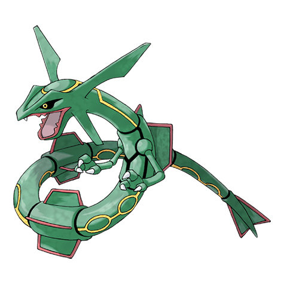

"TOP. Pokemon-s favoritos" |
1. Squirtle:
Tras nacer, se le hincha el lomo y se le forma un caparazón.
Escupe poderosa espuma por la boca.
|

|
2. Decidueye:
Las plumas de las alas le sirven de flechas que dispara con la precisión suficiente para perforar un guijarro a 100 mts.
|

|
3. Pikachu:
Cuando se enfada, este Pokémon descarga la energía que almacena en el interior de las bolsas de las mejillas.
|

|
4. Rayquaza:
Dicen que Rayquaza ha vivido durante millones de años. Las leyendas cuentan que puso fin al continuo
enfrentamiento entre Groudon y Kyogre.
|

|
5. Bulbasaur:
Tras nacer, crece alimentándose durante un tiempo de los nutrientes que contiene el bulbo de su lomo.
|

|
Fuente de la informacion:
Pokemon - Pokedex ESP.
|
"Version 0.1 (Ultima edicion)"
|